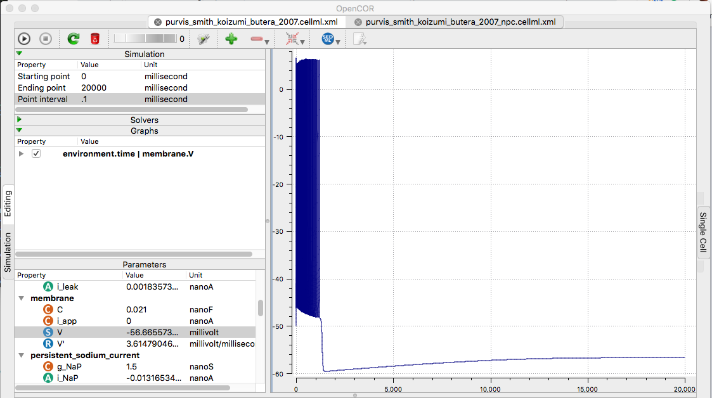
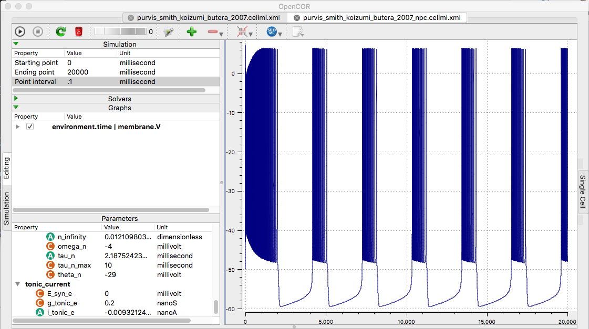

Models for the paper:
Purvis LK, Smith JC, Koizumi H, Butera RJ (2007) Intrinsic bursters increase the robustness of rhythm generation in an excitatory network.
J Neurophysiol 97:1515-26
[PubMed]
are available at the cellml.org website:
Figure 2A
https://models.cellml.org/exposure/baa78a664bd1f620acce7257883fc91a/purvis_smith_koizumi_butera_2007_npc.cellml/view
Figure 2B
https://models.cellml.org/exposure/baa78a664bd1f620acce7257883fc91a/purvis_smith_koizumi_butera_2007.cellml/view
Example: Open the model files in opencor. Change the ending
point to 20000ms and Point interval to 0.1. To graph each model
right-click Vm in membrane list (select Plot against integration
variable). Finaly run each (click upper left play triangle) creates
the following graphs similar to fig 2AB although the second current
step from 0.2 to 0.8 is absent in the model

